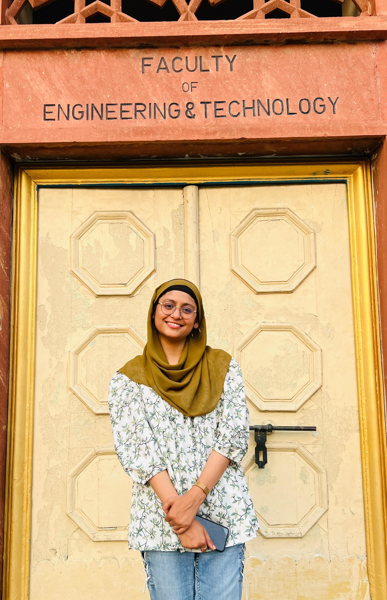

AI Researcher & Software Engineer passionate about building intelligent systems with AI, Computer Vision, and modern software technologies.
AI safety system with wearables and mobile app for real-time gender-based violence threat detection using physiological and acoustic signals.
Automated traffic surveillance solution to detect over-speeding vehicles, license plates, and safety violations using Deep Learning on Jetson Nano.
Generative AI chatbot using Retrieval-Augmented Generation (RAG) and LLMs to answer organization-specific queries from company documents.